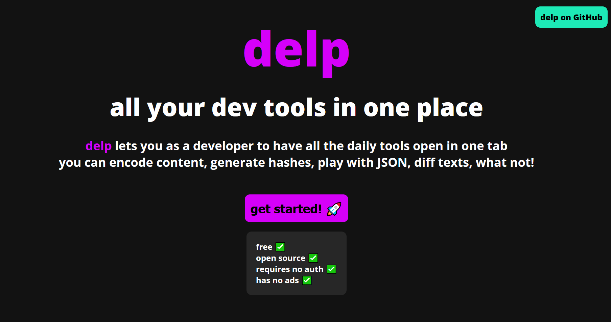

A few weeks ago, I was exploring the internet to find a developer toolbox that is free, easy to use, does not require logins, and simply just works. I found that there are some tools that do meet some of my requirements but nobody could meet all of them.
For instance, why do I need to login into your website in order to calculate the hash of a string? Or why does a particular site provide me with the facility of JSON to CSV conversion only? This also comes with an overhead to remember all of these individual sites that just do one or two things with partially fulfilled non-functional requirements.
This motivated me to go ahead and build something that solves my problems and potentially helps other developers too in their own lives. So, I decided to build delp.
So now that the "what" and "why" were defined, the next question to answer was "how". Since I was not interested in storing any kind of user data, I did not need a user database. Since the world is gifted with JavaScript, all computations can be easily done on the client-side. So it was clear that delp is going to be a frontend task.
When I am tasked with a frontend project, my go-to method is still the simple way of using HTML, CSS, and vanilla JavaScript. But as the project's complexity goes up, it does not hurt to have some more sophistication into how your DOM tree is managed, how elements change their inner values, bringing me to the point of using some sort of frontend library/framework. There are three popular ones: React, Vue and Angular. I have not coded in Vue and Angular. I had not coded much in React either but I had a fair idea about it. Since my developer toolbox could have many tools, I could think of each tool as a React component. So React seemed like a good choice going forward.
I had never coded in TypeScript either, but I always wanted to since I come from a background of C++, and having the ability to ensure type safety can surely help. So this was a good point in time for me to pick up TypeScript. It took me about a week to get started and be confident about building in TS.
I wanted my development workflow to be as simple and as effective as possible. So I came up with this process:
I start developing in the development branch of my source code.
I let my code pass through lint checks, formatting checks, and optionally, some tests too. I build a version of this site and run it on localhost. I keep pushing my development commits too, frequently.
If my build is stable enough, I merge my main branch with the development branch.
When I push commits to the main branch, I want Heroku to deploy my site automatically. And that's it.
So I programmed things to do exactly this. I set up the build, formatting, linting, and testing commands in my package.json file. I also made a Github Action to look for changes in my main branch and deploy to Heroku.

So this is delp.
The process was actually fun. Well, actually, building something like delp is not hard at all. You can pick up any feature of delp and build it in like an evening. But it still feels nice to build a collection of such tools in the way it helps me and potentially other developers too.
I think I am done with delp for now. I am still happy to receive any PRs that fix bugs or add new features since this project is fully open-sourced. And this is the best part, delp can always just keep growing. It does not matter if I am in the driver's seat. I am currently taking a deep dive into computer networking and distributed systems. So, maybe, my future projects would use some knowledge from these domains. Until then, goodbye. Happy programming!
- Vivek